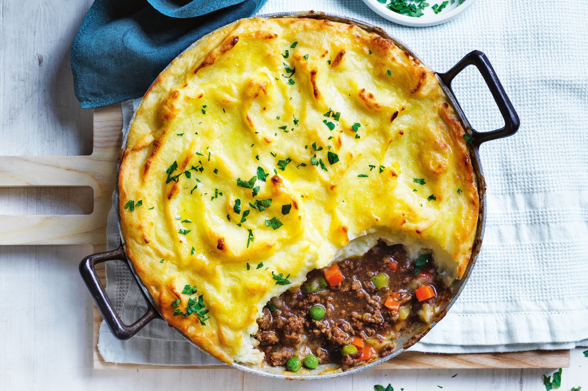

Cottage Pie

A pie consisting of mince beef, vegetables, and gravy. Baked under a fluffy topping of mashed potatoes.
Creating a filling by browning meat and vegetables, layed into a pie base, then covered with mashed potatoes.
This dish will be baked a golden brown and served piping hot.
Ingredients
- Mince
- Carrots
- Onion
- Celery
- Potatoes
Steps
- Brown Mince
- Add vegetables and cook until soft
- Chop potatoes and add to boiling water or steamer and cook until soft
- Place filling into pie tin
- Mash potatoes until smooth
- Scoop potatoes over filling and cover completly
- Back pie until top is golden brown